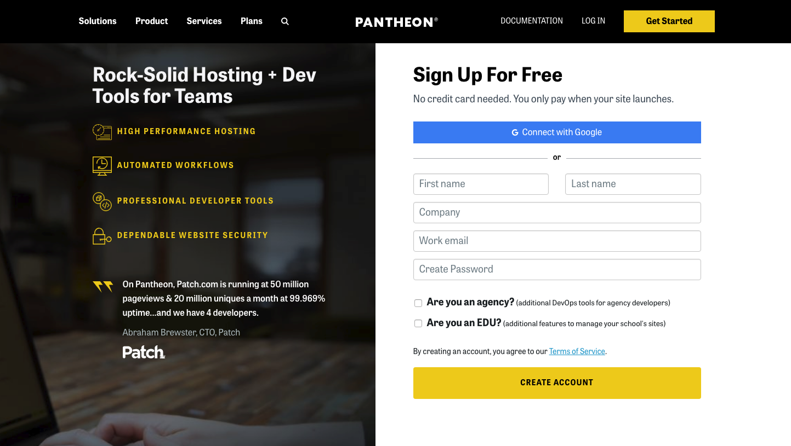
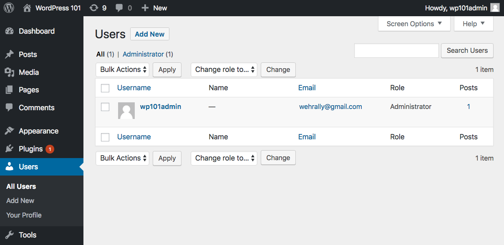

Intro to WordPress
With Allyson Wehrs
awehrs@ackmanndickenson.com • allysonwehrs.com
Slides located at: allyson-wehrs.github.io/GDI-WP-101
Join the GDI MPLS Slack
Slack is a free, chat and messaging system available as either a web or native application for your desktop or mobile device. Join the #wordpress channel.

About you
Why do you want learn WordPress?
- Your name and background
- Why you're here
- A random fact about you
About the TAs
Why do you want to help people learn WordPress?
- Your name and background
- Why you're here
- A random fact about you
About me
- I've been making WordPress sites for almost 3 years
- I joined GDI two years ago after moving to the cities
- I work for Ackmann & Dickenson
- In my free time I love hiking and outdoor activities
- I have two cats Webly and Remy

The Rules
- No question is stupid!
- Raise your hand or speak up at any point
- Grab a TA whenever you need one-on-one help
Schedule
This morning you will...
- Learn what WordPress is
- Learn administrative backend functionality
- Learn how to build out a site
- Learn about pages
- Learn about posts
- Create Content for your site
- Take a lunch break around noon
Ready?
Here we go...
What is WordPress?
Official description from WordPress.org
WordPress is web software you can use to create a beautiful website or blog. We like to say that WordPress is both free and priceless at the same time.
WordPress is
Popular
WordPress is the #1 content management system in the world (60.3% marketshare).
WordPress is
Popular
- WordPress is used by 30.2% of the sites on the web.
- WordPress 4.9 has been downloaded over 90,000,000 times
WordPress is
Free, open source, web-based software
WordPress core software is built by hundreds of community volunteers. People all around the word contribute to WordPress by either submitting bugfixes, testing, designing or writing code for the software.
WordPress is
A website building framework
WordPress is a platform for building and designing a website.
WordPress is
A content management system
WordPress allows site owners to manage their site content via an easy-to-use admin.
WordPress.org vs. WordPress.com
- WordPress.org - Web software used to build a website on a hosting account with a domain name. Sites can be built and modified using themes, plugins or custom code
- WordPress.com - A free blogging service that allows people to create a blog hosted on WordPress.com's servers. Hosting is free (although there are some for-pay add-ons), theme choices are limited, plugins can not be installed and code can not be modified
Pantheon.io
We'll be using Pantheon to spin up a sandbox environment.
Register
1. Create a New Site
2. Name Your Site
3. Choose WordPress Deploy
4. Visit Your Dashboard
5. Click Install WordPress
6. Famous 5-minute WordPress Install
7. Enter Your Information
8. Success! Log In
9. Enter your Username and Password
Welcome to the WordPress Dashboard
A Tour of the Front End
WordPress comes with the default theme Twenty Seventeen
- A sample post on the home page.
- A sample page
- A sample comment
- A sample tag line "Just another WordPress site"
- A set of sidebar widgets
A Tour of the Backend Admin
Located at: yourdomain.com/wp-admin/
The admin is divided into 3 areas:
Tip: You can change what's displayed on an admin page by clicking on the "screen options" tab in the upper right corner.
A Tour of the Backend Admin
Located at: yourdomain.com/wp-admin/
Another Tip: Open the front end of your site in one browser tab and the backend in another so you can easily switch between the 2 as you make changes to your site.
Setting Up Your Site
The Settings menu
General: Title, tagline, site address, date format, etc.
Writing: Post-related settings
Reading: Set site home page, # of posts, rss settings and search engine visibility

Discussion: Manage comment settings
Media: Make default image sizes and other media settings
Permalinks: Define the structure of site URLs
Exercise time!
Take 10 minutes to brainstorm and come up with a site idea you would like to create.
Could be:
- A pet grooming business
- A restaurant
- A travel site
- An e-commerce shop
Some tasks to get you familiar with the Settings menu and dashboard
- Change the name of your site
- Change the "Front page" of your site to the sample page
- Require that comments must be manually approved before going live
- Change the dimensions of "Large size" images
- Bonus: Remove the "WordPress News" from the dashboard
Changing Site Appearance
The Appearance menu
Themes: Manage the current theme in use and other installed themes
Customize: Change your theme's appearance and see a preview before going live.
Widgets: Manage widgets you can add to site sidebars or other "widgetized" areas
Menus: Manage navigation menus
Header: Manage header elements
Editor: Dangerous way to edit theme and plugin flies, sometimes disable for security
Exercise time!
Some tasks to get you familiar with the Appearance menu
- Remove a few widgets and add the Pages widget to Footer 1
- Try managing widgets with the Customizer and add some text to Footer 2
- Add a header image unsplash.com
- Use the Customizer to change the Color Scheme
- Bonus: Try adding a favicon using the Customizer
Adding Content
Pages and Posts
- Pages: Regular static website pages with content
- Posts: Entries (like blog posts) that have a date, categories and tags assigned to them. They can be listed in a particular order (chronologically, alphabetically, etc.) and fed to other sites or blog readers via an RSS feed
Let's Play
Is it a Page or a Post?
Is it a Page or a Post?
- Restaurant review
- About us
- One of multiple press releases
- A news announcement
- Terms and Conditions
- Our Services
- One of multiple portfolio pieces
- Mission statement
Adding Content
Pages
Page Title
Permalink: Manage the name of the page URL
Page Content
Revisions: View and restore previous versions of the page
Custom Fields: Additional fields (display requires theme support)
Discussion: Turn comments on or off for this page
Comments: Displays current page comments
Slug: Manage the name of the page slug
Author: Switch between post authors (display requires theme support)
Publish Change publish status and visibility settings and view revisions
Page Attributes: Assign a page "parent", choose template and sort order
Featured Image: Assign an image to page (requires theme support)
Adding Content
Using the content editor
- Visual and Text tabs: Toggle between WYSIWYG and code view
- Add Media Upload pictures and other files
- Button Bar Use formatting and display options
- Embeds Paste links to popular media services and they will automatically display on the page [sample video]
Adding Content
Posts
Similar settings to Pages
Format: Choose between several post formats (display requires theme support)
Excerpt: Determine an excerpt for a post (display requires theme support)
Send Trackbacks: More information on trackbacks
Categories and Tags: Assign categories and tags to allow posts to be organized by subject
Tip
Use the bulk editor on the page or post list to make edits to multiple pages or posts at a time (like removing comments).
Adding Content
The Future!

Gutenberg - A block editor coming to WordPress 5.
Exercise time!
Create pages and posts for your site.
Try to include some of the following:
- Create at least 4 pages and 4 posts
- Try adding text and pictures to at least 1 page and 1 post
- Add some categories and tags and assign posts to them
- Make a page password-protected
- Add a video to a page using an auto embed
Lunch break!
See you back here at 1pm.
Welcome back!
This afternoon you will...
- Learn about the remaining admin menu items
- Learn about Plugins and how to find, install and activate them
- Learn about Themes and how to find, install, preview and activate them
- Learn about further options for customizing WordPress
- Learn how to install WordPress in various environments
- Learn how to keep WordPress secure
- End with resources, questions, one-and-one help and wrap-up
Managing Menus
Appearance > Menus
Easily create and manage navigation menus
- Create menus: Enter a menu name and click "Create Menu"
- Add pages: Add existing pages, custom links or category pages
- Order Pages: Drag and drop your pages menu items in the desired order. Indent pages to make them children of other pages
- Assign Menu to Theme location: When the menu is ready, assign it to a theme location and click "Save Menu."
- Manage Locations Tab: Assign menus to theme locations
Managing Menus
The Customizer
Manage your menus AND pages at the same time.
Exercise time!
Create a Nav Menu.
- Create a new menu and assign it to the "Top Menu"
- Add your pages to it
- Add a post category to it
- Add a custom link to it
- Arrange your menu items into your desired order.
- Try creating a page and adding it to your nav menu with the Customizer
Managing Comments
The Comments menu
View, approve, delete and mark comments as spam.
Managing Media
The Media menu
View all files that have been uploaded to the site via the content editor. Add, edit and delete files.
Managing Users
The Users menu
Manage existing users: Edit all user data or delete users
Add new users: Assign new users to site
Managing Users
User roles
Users can be given certain levels of editing privileges.
- Administrator: access to all the administration features within a single site
- Editor: ability to publish and manage posts including the posts of other users
- Author: ability to publish and manage their own posts
- Contributor: ability to write and manage their own posts but cannot publish them
- Subscriber: ability to only manage their profile
Your Profile: Edit your own profile settings
What are Plugins?
Official description from WordPress.org
Plugins can extend WordPress to do almost anything you can imagine.
Plugins are
Powerful
Plugins are used to add functionality to WordPress. Examples include ecommerce, SEO, forms, photo galleries, social media sharing, forums and much more!
Plugins are
Often Free
Right now there are over 55,000 free plugins in the official WordPress Plugin Directory.
Plugins
Plugins menu
WordPress comes with 2 plugins:
- Akismet: Protects your blog from comment and trackback spam. This plugin requires an Akismet key
- Hello Dolly: Adds a random lyric from "Hello Dolly" to the upper right-hand corner of admin screen.
Plugins
Managing Plugins
- Activate/Deactivate: Turns plugins "on" and "off"
- Edit: Ability to edit plugin files NOT RECOMMENDED
- Delete: Delete deactivated plugins
Plugins
Finding plugins
Searching under Plugins > Add New
Browsing the WordPress Plugin Directory
Plugins
3 ways to install plugins
Download a plugin zip file and install it via the "Upload" link
Clicking "Install Now" from "Install Plugins" search results
Unzip the plugin files and upload it via FTP to the
/wp-content/plugins folder

Plugins
Usage tip
Plugins often use shortcodes to add content to a page or post.
For example, the plugin Contact Form 7 uses the shortcode [contact-form-7 id="105"] (the ID is the ID of the form) to allow you a form to a page or post.
Plugins
Security tip - Vet plugins first
- Ratings Read the plugin reviews
- Maintenance Check to see it the plugin has regular updates
- Support See if the plugin developers regularly answer support questions
Top Free Plugins
Favorite Free plugins
- WordPress SEO by Yoast: SEO plugin for WordPress
- Contact Form 7: Used to make simple contact forms
- WooCommerce: Ecommerce plugin
- Sucuri Free: Malware scanning and 1-click hardening
Top Premium Plugins
Favorite For-pay plugins
- Gravity Forms: A very powerful and feature-rich forms builder
- Backup Buddy: Easily backup, restore and migrate a WordPress site
Exercise time!
Some tasks to get you familiar with installing and activating plugins
- Search for plugins via Plugins > Add New and try some
- Browse the WordPress Plugins Directory, download one and install it using the "upload" link
What are Themes?
Official description from WordPress.org
Fundamentally, the WordPress Theme system is a way to 'skin' your weblog. Yet, it is more than just a 'skin.' Skinning your site implies that only the design is changed. WordPress Themes can provide much more control over the look and presentation of the material on your website.
Themes are
Powerful
A theme not only determines how a site looks, it can also add functionality. There are themes that can turn a WordPress site into an online store, an art portfolio and more.
Themes are
Often Free
Right now there are over 2,846 free themes in the official WordPress Themes Directory.
Managing Themes
Appearance > Themes
WordPress currently comes with 2 themes: Twenty Seventeen and Twenty Sixteen.
Under Appearance > Themes is a list of all installed themes. The theme in use is labeled "Active."
"Live Preview" before you activate or customize a theme
Click "Customize" under the current theme or "Live Preview" under an available theme to see how a new or modified theme will look before you commit to it.
Themes
Finding new themes
Searching under the "Add Themes" tab
Browsing the WordPress Themes Directory
Themes
3 ways to install themes
Install right from the "Install Themes" tab
Download a theme zip file and install it via the "upload theme" link
Unzip the theme files and upload it via SFTP, FTP, Git, etc. to the
/wp-content/themes folder
Exercise time!
Some tasks to get you familiar with installing, previewing and activating themes
- Use the live theme previewer to see how Twenty Sixteen will look on your site and try activating it
- Search for themes via the "Install Themes" tab and give one a try
- Browse the WordPress Themes Directory, download one and install it using the "upload" link
Installing WordPress
What WordPress needs to run on a web host
- A hosting account running PHP version 7.2 or greater and MySQL version 5.6 or greater
- Software from WordPress.org or an install feature through a hosting account control panel
- A domain name (or temporary URL provided by your host)
Installing WordPress
What Is Needed For a Control Panel Install
- Web host needs to offer it
- Access to your hosting control panel
Control Panel Install
Example: Cpanel

Control Panel Install
Example: Cpanel

Control Panel Install
Example: Cpanel

Control Panel Install
Example: Bluehost
 Screenshot by Amy Lynn Andrews
Screenshot by Amy Lynn Andrews
Control Panel Install
Example: WPEngine

Installing WordPress
What Is Needed For a Manual Install
- Access to your hosting control panel to create a database and database user
- A SFTP Program. SFTP (or FTP) is the method used to upload and download files between a computer and a hosting account
- A Web browser. Installation is performed step-by-step on a web browser
Manual Install
Upload WordPress software via SFTP to your hosting account
Manual Install
Bring your site up in a web browser to do the step-by-step install

Local Install
Running WordPress on your computer
If you want to design or develop for WordPress, it's wise to work on a local install.
Local Install
What Is Needed For a Local Install
- An environment on your computer with all the tools WordPress needs to run
- A Web browser. Installation is performed step-by-step on a web browser
Local Install
Creating the environment WordPress needs (Apache, MySQL and PHP)
- Software
- Services
Security
Being popular means you're a target
It is important to take security seriously when running a site that uses a CMS.
Security
During install
- Choose a good host
- Make your database table prefix unique. Don't use "wp_" or "wordpress_"
- Create a new database user, don't use the default
- Make your database user password strong.
- Do not use "admin" as a username. "admin" used to be the default WordPress username. Use a unique username and a very strong Password
Security
Ater install: WordPress hardening
- Take some code-level and sysadmin steps to "harden" WordPress
- Securing wp-includes
- Securing wp-config.php
- Disable File Editing
- And more
- Or use a security plugin like Sucuri that performs "1-click hardening"
Security
After your site's live: Monitoring and protection
- Keep WordPress core, themes and plugins updated!
- Use a security plugin
- Use a service that scans and your site daily for malware
- Use a firewall service that shields your site from hackers and malware. Some hosts, like WPEngine.com, have this built into their hosting service
Security
If you do get hacked
- Use a malware removal service.
- Sucuri.net Reasonably priced WordPress security experts
Where to go from here?
Further Customizing WordPress
Power Users - Use theme frameworks to tweak site design.
Gutenberg - the new WordPress content editor
Front-End Developers - Use HTML, CSS and PHP to build your own themes.
Web Programmers - Use PHP and JavaScript to build plugins.
Where to go from here?
Power users
Theme Frameworks
- Genesis - The Genesis Framework empowers you to quickly and easily build incredible websites with WordPress.
- Headway - A drag and drop framework that allows you to control almost every element of a theme’s design, such as layout, colors and fonts, by pointing and clicking.
- Themify - Themify Builder allows you to create custom page layouts, and populate them with a range of page elements and modules, all though a drag and drop interface.
- And many more!
Where to go from here?
Gutenberg
- An Introduction to Gutenberg - Joe Casabona
- Gutenberg Development - Zac Gordon
Where to go from here?
Front-End Developers
Folks with a HTML/CSS skill set can customize or build their own WordPress themes.
- WordPress Courses - Carrie Dils
- Building Themes from Scratch Using Underscores Morten Rand-Hendriksen
Where to go from here?
Web programmers
Folks with PHP/MySQL/JavaScript skill set can build WordPress plugins.
- JavaScript for WordPress Master Course Zac Gordon
- Learn Plugin Development - Pippin Williamson
Resources
Join the GDI MPLS Slack
Slack is a free, chat and messaging system available as either a web or native application for your desktop or mobile device. Join the #wordpress channel.
Resources
Join the MSP WordPress Meetup Group
The MSP WordPress Meetup Group is a place for WordPress enthusiasts to meet and discuss WordPress.
Resources
Attend a WordCamp
WordCamps are affordable, informal, community-organized WordPress conferences held all over the world. They are packed with workshops geared toward WordPress users, designers and developers.
Resources
WordCamp Minneapolis / St. Paul!
August 23 – 25, 2018
Questions?
One-on-one help time
Feel free to pull me or a TA over to answer questions specific to your projects or regarding any issue not covered in class.
THE END
Thank you!
And please take the GDI survey